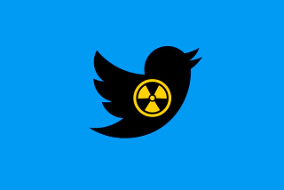

La toxicité sur Twitter

On se balade souvent sur les réseaux sociaux. Mais on imagine pas forcément ce que peut engendrer le côté "obscur" de ces sites. Laissez moi vous expliquer.
Twitter est un réseau social créé en 2006. Souvent connu pour être le rival de Facebook créé par Mark Zuckerberg. Au début il n'a pas fait un bond exceptionnel mais il a créé quelque chose qui à fait sa signature. Au début pour écrire un Tweet, donc un message sur le fil d'actualités c'était seulement 140 caractères, et je précise caractères pas mots ! Mais en 2017 il l'a étendu à 280 caractères. Donc Twitter essaye d'obliger les utilisateurs à écrire un message court et précis. Mais il y a quand même une technique pour étendre cette limite : les thread. Pour expliquer c'est faire des messages à la suite mais qui propose un contexte. Des personnes l'utilisent souvent pour expliquer quelque chose qui a été modifié sur un truc. Mais aussi expliquer un drama qui à souvent tourné au drame.
En pensant que Twitter est une source de haine, elle ressort dès fois plusieurs choses. Notamment le cyber harcèlement quand on donne son avis sur quelque chose mais que certaines personnes n'approuvent pas le même point de vue donc ils insultent. Selon une étude faite par SimpleTexting , 38% des utilisateurs pensent que Twitter est le réseau social le plus toxique. Cela est dû aux personnes qui font des trolls sur le site en question. Et souvent ce qui ressort est le fait qu'ils ont peur de publier quelque chose due à ce que j'ai dis précédemment. Ils ont également vu des commentaires négatifs sur des sujets comme le genre ou l'orientation sexuelle.
Mais bien évidemment, il n'y a pas seulement que des regrets, il y a aussi un peu d'espoir.